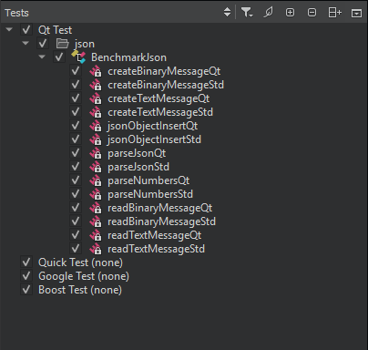

Build and run tests
To build and run tests:
- Open a project that has tests.
- In the Tests view, select the tests to run.
- In the Test Results view, select:
 (Run All Tests) to run all tests.
(Run All Tests) to run all tests.- (Run Selected Tests) to run the selected tests.
- (Run Failed Tests) to re-run the tests which failed in the last run. Depending on the framework, this may select more tests if it is impossible to distinguish or to fully address the test.
- (Run Tests for Current File) to run the tests in the file currently open in the code editor.
By default, Qt Creator builds a project before deploying and running it. To run all tests without building and deploying them again, select Run All Tests Without Deployment in the context menu. To run the selected tests without deployment, select Run Selected Tests Without Deployment.
You can run tests also from the context menu in the Tests view or by going to Tools > Tests.
Note: If you enable both build system based and code based tests, you may run tests twice when selecting Run All Tests or Run Selected Tests. This happens if the tests can be found by the code based test frameworks and are registered as test with the build system.
If a test takes more than a minute to execute, the default timeout might stop the test execution. To increase the timeout, go to Preferences > Testing > General.
Select tests to run
The Tests view shows all the tests found for the currently active test frameworks in the current project. Select the test cases to run.

If a Qt Quick test case does not have a name, it is marked Unnamed in the list. Run All Tests executes unnamed test cases. You cannot select or deselect them.
Qt Creator scans the project for tests when you open the project and updates the test list for the currently active test frameworks when you edit tests. To refresh the view, select Rescan Tests in the context menu.
To show or hide init and cleanup or data functions in the Tests view, select  (Filter Test Tree), and then select Show Init and Cleanup Functions or Show Data Functions. Double-click a function in the list to open its source code in the code editor.
(Filter Test Tree), and then select Show Init and Cleanup Functions or Show Data Functions. Double-click a function in the list to open its source code in the code editor.
The Tests view lists test cases in alphabetic, case insensitive order. To list them in the order in which they appear in the source code, select (Sort Naturally).
Run and debug tests from code editor
You can run and debug tests in the file currently open in the code editor. To run all tests in the open file, go to Tools > Tests > Run Tests for Current File.
Note: Available only for code based test frameworks.
To run the test currently selected in the open file, select Run Test Under Cursor in the context menu.
Note: Available only for code based test frameworks.
To debug the currently selected test, select Debug Test Under Cursor in the context menu.
Note: Availability for build system based tests depends on the build system tool's abilities.
Turn on build system based tests
By default, Qt Creator does not handle build system based tests to avoid interference with code based parsers. To turn on build system based tests, select the respective test tool in Preferences > Testing > General.
The detection of tests is usually much faster for build system based tests as this normally does not involve scanning or parsing. The information in the tests tree is usually more detailed when using code based tests.
If you turn on both code based and build system based tests, you may duplicate tests inside the tests tree.
Locate Qt Test data tags
To locate Qt Test data tags:
- Press Ctrl+K (Cmd+K on macOS) to activate the locator.
- Enter
qdt, followed by a space.
See also How To: Test, Select the build system, Testing, and Test Results.